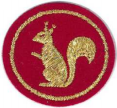
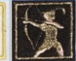
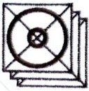
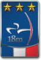
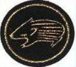
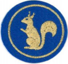

Pour les clubs de tir à l'arc
Les distinctions de vos archers, sans tableur.
distinctarc repère automatiquement les distinctions obtenues par les archers de votre club à partir de leurs résultats, et vous aide à les commander puis à les remettre.
Salle, TAE, Campagne, 3D, Nature, Beursault : toutes les distinctions fédérales.








Le casse-tête des distinctions
Après chaque concours, il faut retrouver quels archers ont franchi un palier, dans quelle discipline, avec quel arc et dans quelle catégorie. Puis vérifier le stock, commander ce qui manque, et ne pas oublier de le remettre. Dans un tableur, c'est long et on en rate forcément.
Ce que fait distinctarc
- Import des résultatsVous importez l'export CSV des résultats FFTA, avec un aperçu avant de valider.
- Calcul automatiqueLes distinctions obtenues sont détectées selon le barème fédéral de chaque discipline.
- Suivi jusqu'à la remiseChaque distinction passe de « à commander » à « à remettre » puis « remise ».
- Stock de distinctionsLa liste de commande tient compte des distinctions déjà en stock au club.
- Un espace par archerChaque archer consulte ses résultats et ses distinctions.
- Barèmes en accès libre →Toutes les distinctions FFTA et les scores à atteindre, consultables par tous les archers.
Déjà en service
distinctarc est né au sein de la 1re Compagnie d'Arc de Grenoble, qui l'utilise pour suivre les distinctions de ses archers.